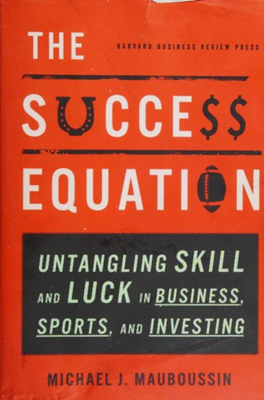

迈克尔·莫布森（Michael J. Mauboussin）是摩根士丹利投资管理公司旗下对点全球（Counterpoint Global）的综合研究主管，此前曾在瑞信担任全球金融战略主管长达二十余年，并在哥伦比亚商学院担任兼职教授。他的研究横跨金融学、心理学、复杂系统理论与体育统计学，是当代投资思想界最具跨学科视野的学者之一。《成功方程式》（The Success Equation）于2012年由哈佛商业评论出版社（Harvard Business Review Press）出版，核心议题是：在任何一项活动的结果中，技能与运气各自贡献了多少？这个问题看似简单，却在投资、商业、体育等领域有着深远的实践意义。
莫布森在书中构建了一个"技能-运气连续谱"（Skill-Luck Continuum）框架。在这条连续谱的一端是纯粹由技能决定的活动，如国际象棋；另一端是纯粹由运气决定的活动，如轮盘赌。大多数现实活动——包括投资、企业经营和职业体育——则处于两者之间的某个位置。莫布森提出了一个简洁的检验方法：如果你能故意输掉比赛，那么技能在其中占主导；如果你无法故意输掉，说明运气的权重更大。他通过大量数据分析表明，投资领域在这条连续谱上明显偏向运气一端——不是因为技能不存在，而是因为参与者的技能水平日益趋同，当所有人都变得更聪明时，相对优势缩小，运气对结果的影响反而增大。这就是所谓的"技能悖论"（The Paradox of Skill）：绝对技能水平的提高，反而导致运气在相对结果中的权重上升。
这一框架对投资实践有深刻的启示。首先，它解释了为什么短期业绩几乎无法用于评估投资经理的能力——在运气占比较高的活动中，需要大量的样本（可能是数十年的业绩记录）才能统计性地区分技能与运气。其次，它要求投资者将注意力从结果转向过程：一个好的决策过程在短期内可能产生坏的结果（因为运气不佳），而一个糟糕的决策过程也可能在短期内产生好的结果（因为运气眷顾）。长期来看，只有过程的质量才是可控和可改进的。莫布森引用了纳西姆·塔勒布（Nassim Taleb）的"替代历史"概念来加深这一论点：评估一个决策的质量，不应仅看它在这个世界上产生的实际结果，还应考虑它在所有可能的平行世界中会产生的结果分布。
对于投资者与商业决策者而言，《成功方程式》提供的最重要的工具是一种认知校准。在技能与运气交织的领域中，人类有一种根深蒂固的倾向：在成功时高估技能的作用，在失败时高估运气的影响——这种归因偏差会阻碍真正的学习与进步。莫布森的框架帮助读者对自身所处领域中技能与运气的相对权重建立更准确的判断，从而做出更理性的决策：在技能主导的领域加大练习与改进的力度，在运气主导的领域则注重过程纪律与风险管理。查理·芒格（Charlie Munger）曾说过，他对那些将自己的成功全部归因于个人能力的人抱有深深的怀疑。莫布森的这本书，为芒格的这一怀疑提供了严谨的定量基础。